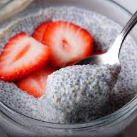

Chia Coconut Pudding

Description
This chia seed pudding with coconut milk is a healthy alternative to processed desserts. Chia seeds make great desserts and are high in omega-3s. This recipe uses agave (or stevia, if you prefer) as a sweetener instead of sugar. Stir again before serving and top with fresh fruit and another dash of cinnamon or spices.
Ingredients
- 2 cups sweetened coconut milk
- 6 tablespoons unsweetened coconut milk
- 1 tablespoon agave nectar
- 1/2 tablespoon vanilla extract
- 1 pinch salt
- 1/2 cup chia seeds
- 1/2 cup diced fresh strawberries
Steps
- Whisk together sweetened and unsweetened coconut milks, agave nectar, vanilla extract, cinnamon, and salt in a bowl; stir in chia seeds.
- Allow mixture to soak until thickened, at least 20 minutes, or cover the bowl with plastic wrap and refrigerate overnight.
- Stir pudding and top with strawberries.